Torso Tvers
//:Mixed Media Installation
"Nomadic, demonic, deteriorating images hovering over"
at Nikolaj Kunsthal - Copenhagen
Torso: Image Movement
16mm film loop projection on linen, 4 channel audio, different variations
Tvers: Moth(I, II, III)
Infrared photographs, Double sided dibond pigment print, 150cmx100cm
torsotvers.gif
Pigment print on film, 16mm film loop projection on linen, 15 seconds
Photographs and film projections are installed in Nikolaj Kunsthal's upper left gallery and former organist's room. These works collectively represent a linage of still and moving imagery of fine art prints, 16mm films, sound loops and projections of self deteriorating moving images. From poetics of cinema and choreography to contemporary internet culture, this body of works tries to conjure a special complex, sinister and amnesiac symbolism within a former church, Nikolaj Kunsthal.
 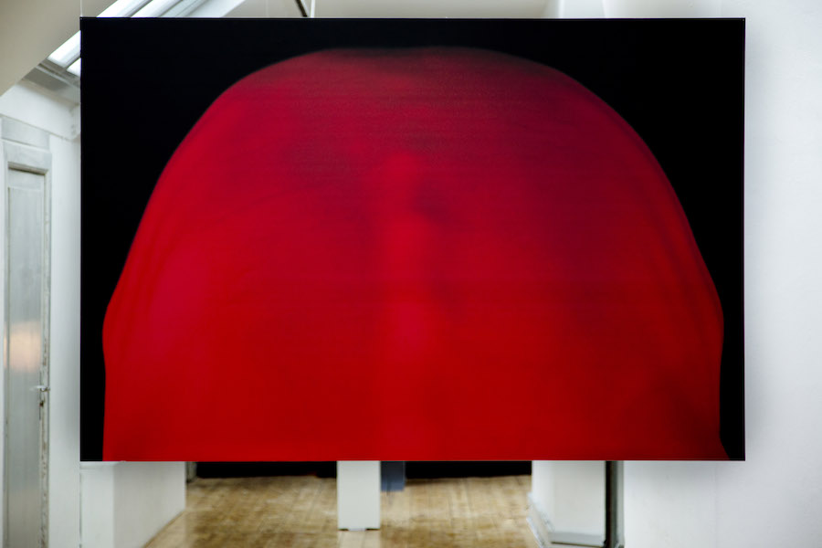
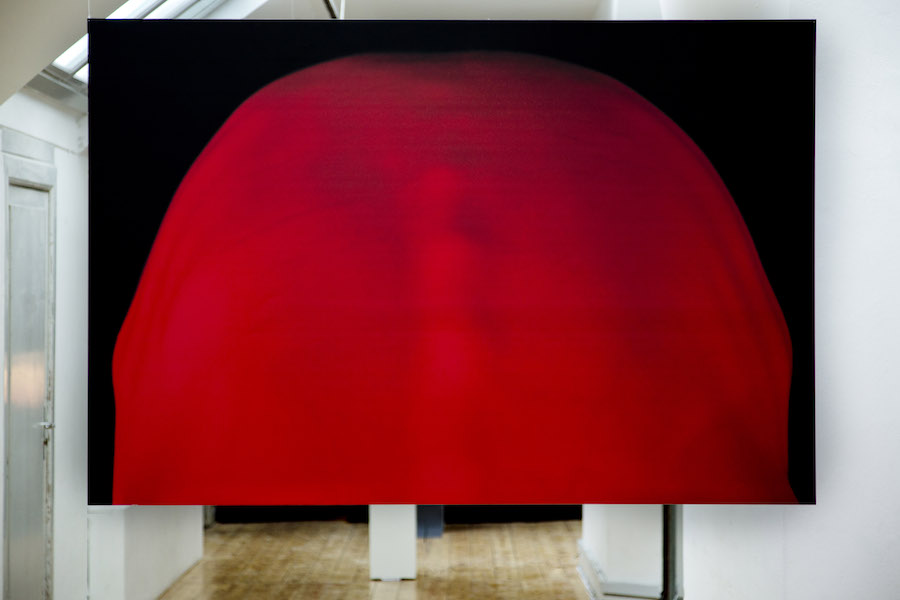
 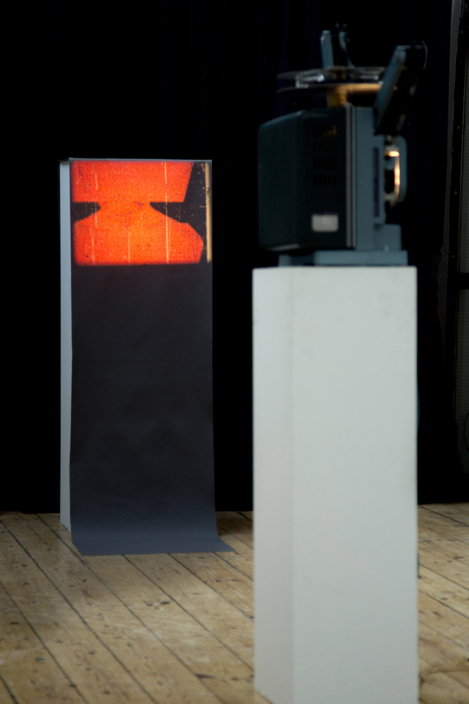
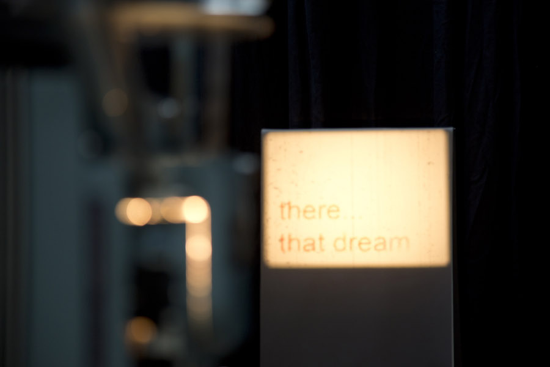
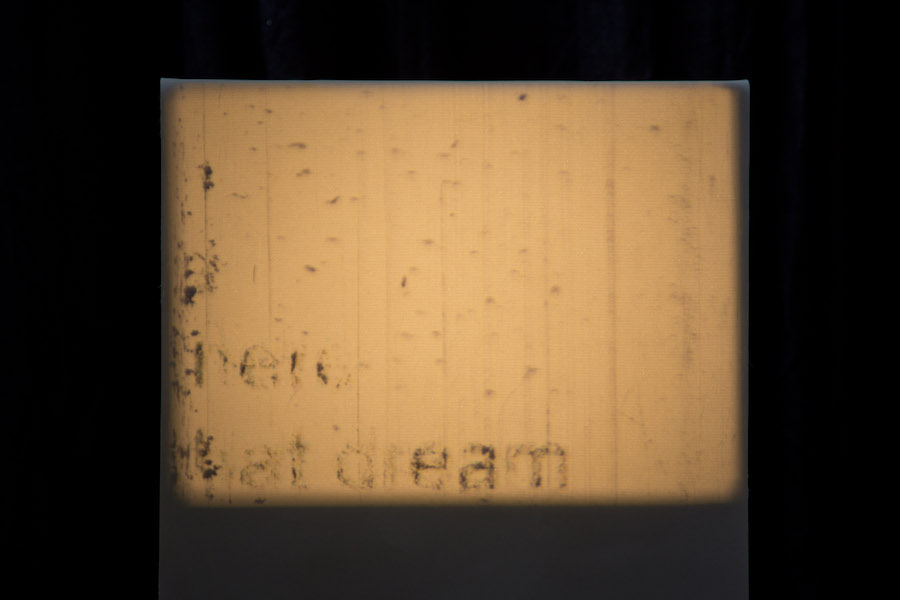
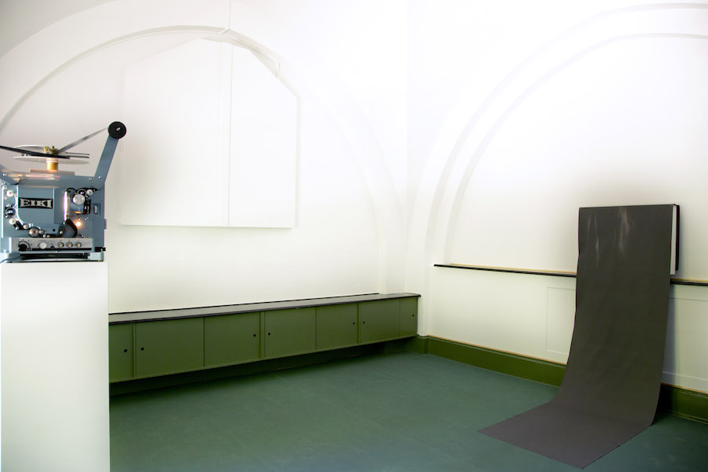
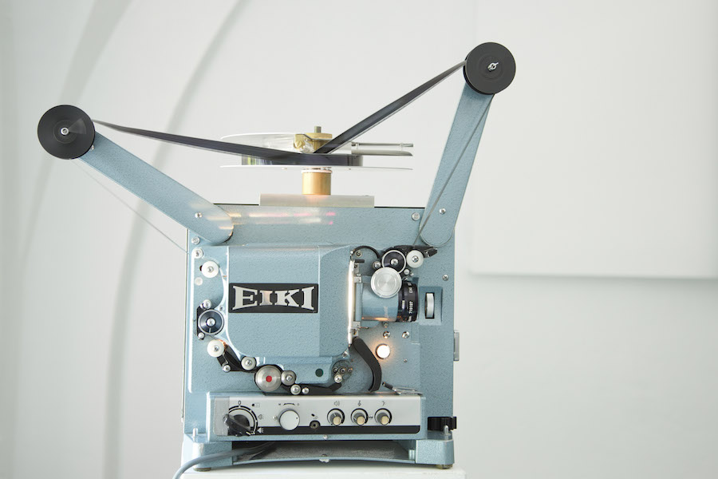
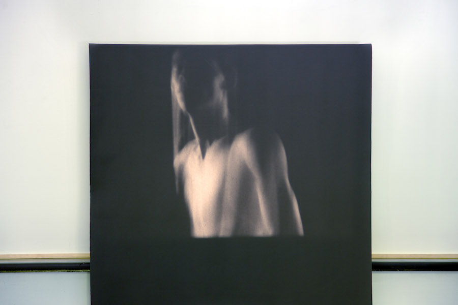
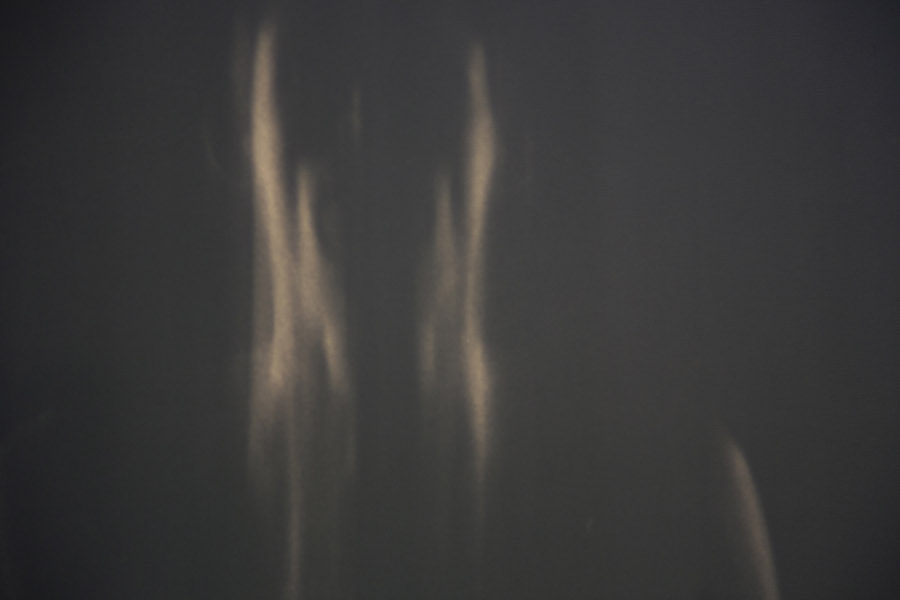
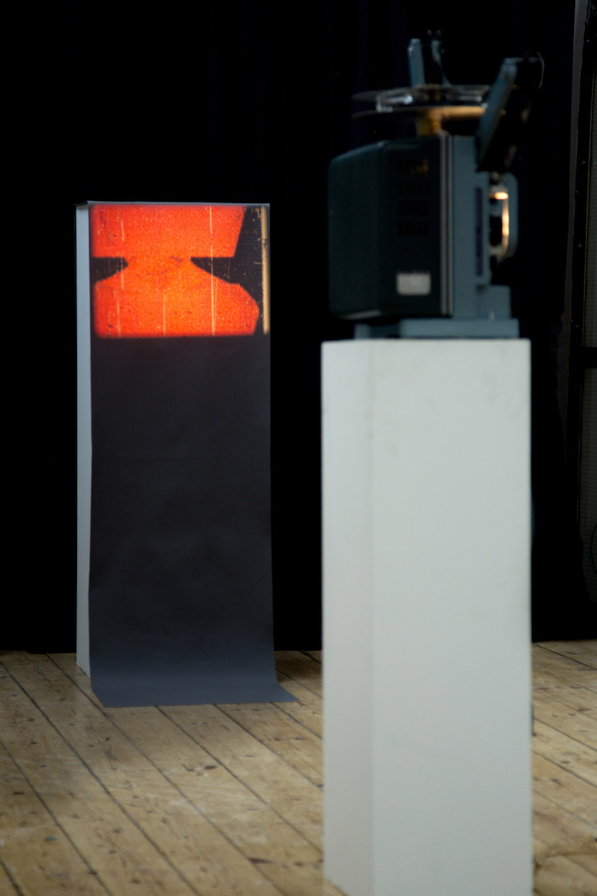
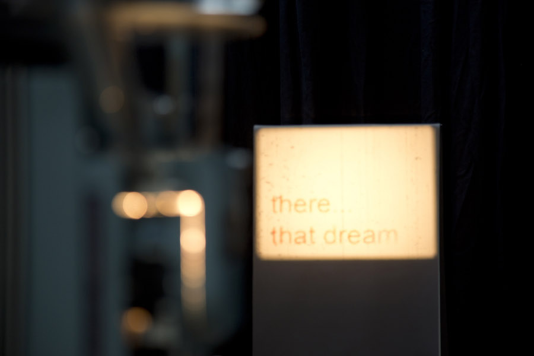
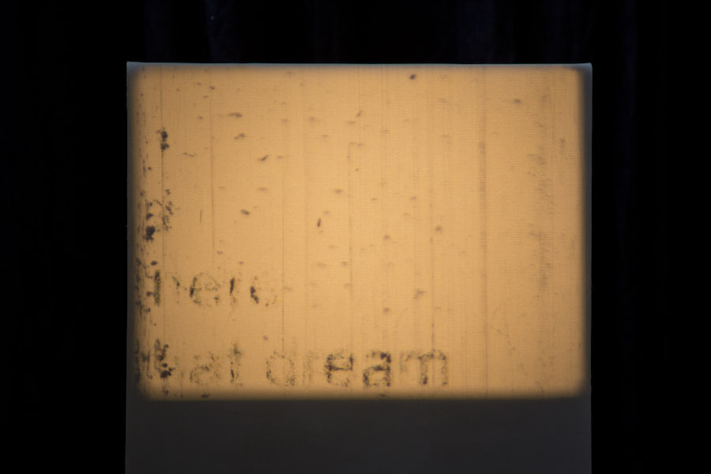
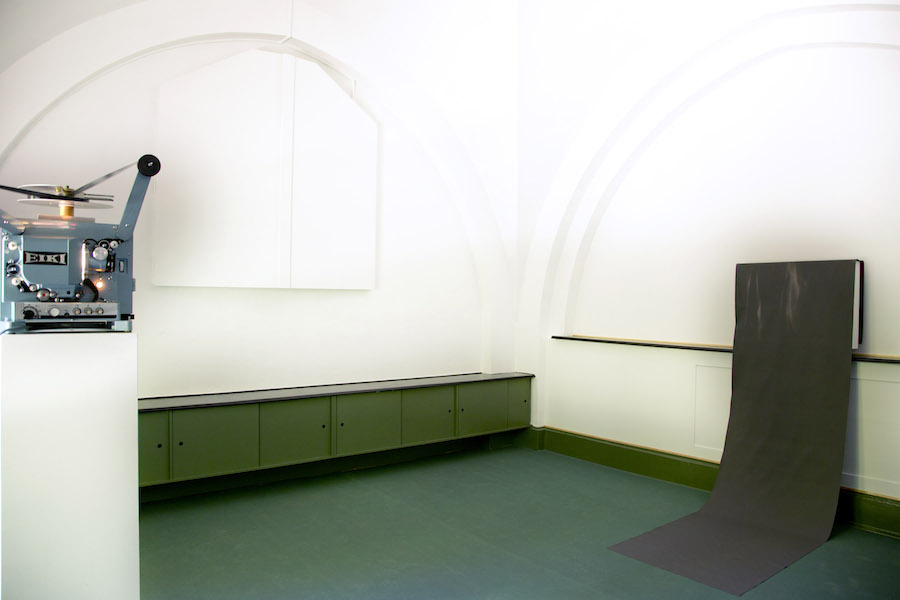
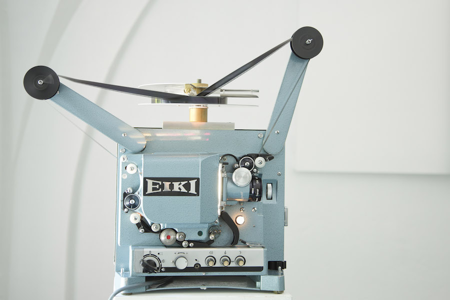
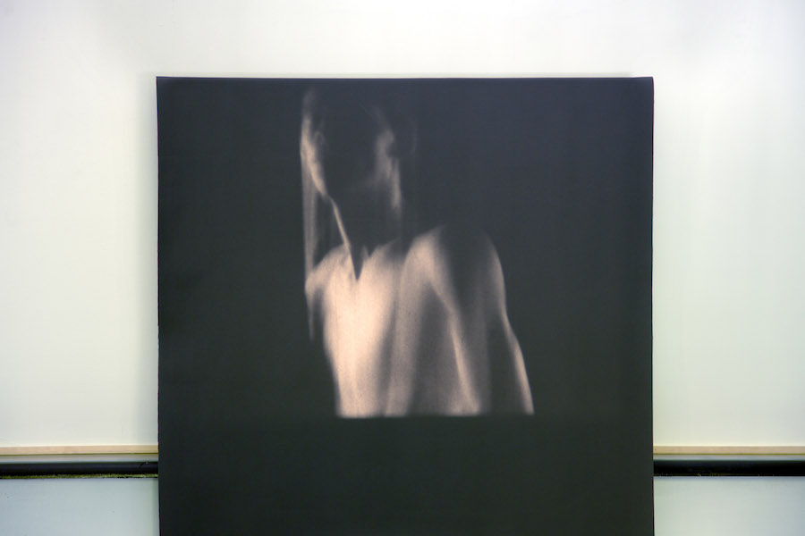
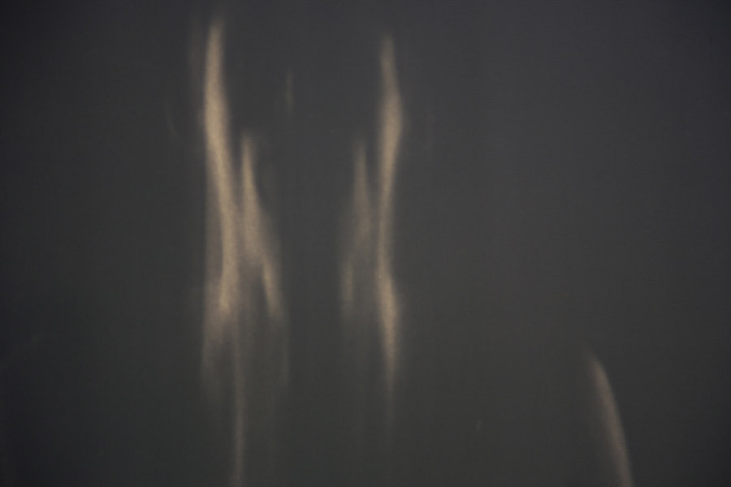